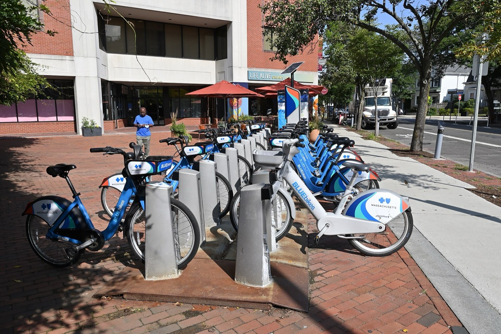
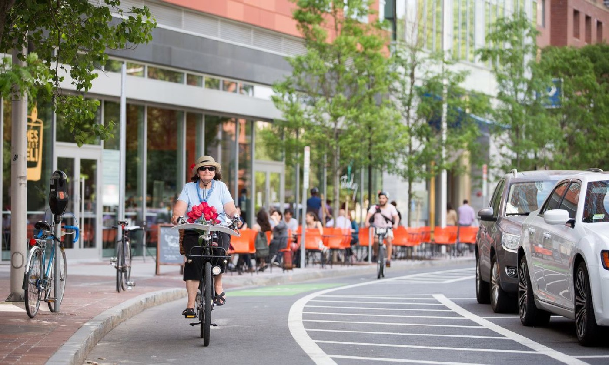

Group rides this weekend
Easy, no-drop rides near you↗

Learn to ride in traffic
Free one-on-one lessons→

Car-free paths
28 trails near Boston↑
Photos: 4300streetcar, CC BY 4.0; Adam Coppola, CC0
Somerville
1,126 trips
on foot, bike and transit this month
#2 of 26 Shift towns this month
Help more of your people walk, bike or take transit
EmployersSchools and collegesTownsLocal businesses